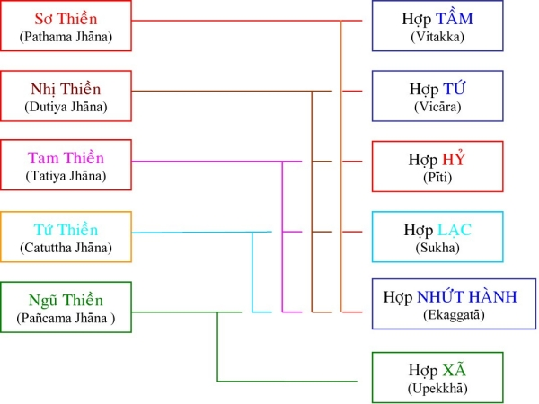

|
PHẬT GIÁO NGUYÊN THỦY THERAVÀDA VI DIỆU PHÁP BAN HOẰNG PHÁP |
|
BuddhaSasana Home Page |
Vietnamese, with Unicode VU Times or CN-Times font |
|
|
PHẬT GIÁO NGUYÊN THỦY THERAVÀDA VI DIỆU PHÁP BAN HOẰNG PHÁP |
|
Xin lưu ý: Cần có phông UnicodeViệt-Phạn VU Times hay CN-Times cài vào máy để đọc các chữ Pàli. |
|
BÀI 8. TÂM SẮC GIỚI Là những tâm thuộc về lảnh vực sắc (sắc tế và không nghiêng nặng về lảnh vực cảnh như tâm dục giới). Theo sớ giải, sở dĩ chúng được gọi là tâm sắc giới vì 3 ý nghĩa sau: Gọi là tâm sắc giới vì tâm này lấy sắc pháp làm đề mục để tu thiền quán (Kammatthāna = tu thiền sắc giới). Gọi là tâm sắc giới vì những tâm thiện tu thiền sẽ có kết quả sanh về cõi sắc giới làm người sắc giới. Gọi là tâm sắc giới vì quả thành tựu của thiền sắc giới là cõi sắc giới. Sắc pháp ở đây là sắc tế chớ không phải thô thiển như ở cõi dục giới. I. Tâm Thiền Thiện Sắc Giới (Kusalarūpavacaracitta):Là tâm lành, lấy sắc pháp làm đề mục để tu thiền định. Có tác năng tạo quả tục sinh trong cõi sắc giới. 1.1) Pháp Tu Thiền Chỉ (Sammādhi Bhāvanā): Thiền (Jhāna) thường được gọi là Thiền Ðịnh, là trạng thái tâm chuyên chú vào một đối tượng hay còn gọi là đề mục (Ðịnh=Ekaggatā). Sự định tâm, chuyên chú này có tác dụng thiêu đốt các nghịch pháp phiền não (Tapo). Ta có thể nói Thiền hay thiêu đốt pháp nghịch là cái dụng của Ðịnh và Ðịnh hay sự chú tâm là cái theå của Thiền. Ðồng sanh với tâm thiền có nhiều tâm sở (Cetasika) nhưng có 5 tâm sở được xem là quan trọng nhất vì chúng có khả năng đối trị, thiêu đốt các nghịch pháp. Năm chi pháp ấy là: Tầm (Vitakka): là sự hướng tâm đến cảnh; đưa đến và quy tụ trên đối tượng. Có tác dụng diệt trừ hôn trầm (Thīna) và thụy miên (Middha) là trạng thái buồn ngủ, dã dượi của tâm. Tứ (Vicāra): là sự quan sát, dán áp tâm lên đối tượng. Tâm này diệt trừ và đè nén được hoài nghi (Vicikicchā) là một trạng thái lưởng lự phân vân. Hỷ (Pīti): còn gọi là phỉ lạc là trạng thái no vui với đối tượng, hoan hỷ, sung sướng, giống như sự vui mừng của một người đang khát mà gặp được nước. Do sự no vui này, nó có thể đoạn diệt, chế ngự được sự sân ưu (Vyāpāda) là một trạng thái buồn bực khó chịu. Lạc (Sukha): là trạng thái sung sướng do hưởng cảnh, như một người khát khi uống được hớp nước đầu tiên. Tâm này trừ diệt trạng thái phóng dật (Uddhacca) một trạng thái tán loạn, lao chao. Ðịnh (Ekaggatā): Còn gọi là Nhất Hành. Là trạng thái chú tâm vào đối tượng. Tâm này áp đão được sự tham dục (Kāmacchanda) một trạng thái ái nhiểm, vọng mống. 1.2) Ðề mục thiền chỉ (Kammatthāna): có tất cả 40 đề mục gồm cả thiền sắc giới và thiền vô sắc giới. Riêng về sắc giới có tất cả 36 đề mục. 10 Ðề mục Hoàn Tịnh (Kasiṇa): Ðất (Patthavī) – Nước (Āpo) – Lửa (Tejo) – Gió (Vāyo) – Màu Xanh (Nīla) – Màu Ðỏ (Lohita) – Màu Vàng (Pīla) – Màu trắng (Odāta) – Hư Không (Ākāsa) – Ánh Sáng (Arābha). 10 Ðề mục Bất Tịnh (Asubha): Tử thi sình (Uddhumutaka) – Tử thi đổi màu sắc (Vinilaka) – Tử thi rả ra chảy nước mủ (Vipubbaka) – Tử thi bị đứt đoạn (Vicchiddika) – Tử thi bị đục khoét (Vikkhayitaka) – Tử thi văng rời ra từng mảnh nhỏ (Vikkhiṭṭaka) – Tử thi bị rả ra từng miếng (Hatavikkhitakaṃ) – Tử thi đẩm máu (Lohitaka) – Tử thi bị vòi đụt khoét (Pulavaka) – Tử thi chỉ còn bộ xương (Aṭṭhikaṃ Hài cốt). 10 Ðề mục tùy niệm (Anussati): Niệm Phật (Buddhānussati) – Niệm Pháp (Dhammānussati) – Niệm Tăng (Sanhānussati) – Niệm Thí (Cāgānussati) – Niệm Giới (Sīlānussati) – Niệm Sự Chết (Maranānussati) – Niệm Hơi Thở (Ānāpānasati) – Niệm Chư Thiên (Devānussati) – Niệm Niết Bàn (Nibbānānussati hay Upasamāsati) – Niệm Thân (Kāyānussati). 4 Ðề mục Tứ Vô Lượng Tâm (Brahmāvihāra): Từ (Mettā) – Bi (Karunā) – Hỷ (Muditā) – Xã (Upekkhā). 1 Ðề mục Tưởng (Sāññā): Tưởng về sự ô trược của vật thực (Āhāro patikkulasāññā). 1 Ðề mục Phân Biệt (Vatthāna): Phân biệt về thể tánh của Tứ Ðại (Catudhātuva vatthāna). 1.3) Phương thức hành thiền (Bhāvanā): Trong quá trình hành thiền chỉ, ta có thể phân làm hai giai đoạn: (i) Giai đoạn luyện tập: a) Ðối với những đề mục hoàn tịnh: Là đề mục hành thiền bằng sắc pháp, hành giả trụ tâm trên những đề mục ấy cho đến khi đề mục chỉ còn là một ấn tượng của tư tưởng mà thôi. Với 10 đề mục Kasina hành giả có thể đắc từ sơ thiền đến ngũ thiền. Hành giả dùng đất tạo thành 1 hình tròn đường kính khoảng một gang tay (vật ấy gọi là sơ tướng – Parikamma Nimitta), để cách xa độ một thước rồi nhìn chăm chú vào đó mà niệm cho đến khi nhắm mắt mà vẫn có thể thấy hình tròn đó hiện ra (hình tròn đó được gọi là thô tướng – Ugogaha Nimitta), hình này còn thô sơ và còn những dấu vết dọc ngang của đối tượng trét đất trước. Hành giả tiếp tục nhắm mắt và chuyên chú định tâm quán sát thô tướng này cho đến khi nó trở thành một vòng tròn sáng không một tì vết nào cả (vòng tròn sáng này được gọi là quang tướng – Pātibhāga Nimitta), quang tướng này không có thực mà chỉ hình thành do sự tưởng tượng của hành giả mà thôi. Hành giả lại tiếp tục định tâm quan sát quang tướng đó cho đến khi chứng được đệ nhất thiền (Pathamajjhāga). Khi chứng được sơ thiền thì diệt trừ được 5 triền cái (Nīvarana): ái dục (Kāmacchanda), sân (Vyāpāda), hôn trầm thụy miên (Thīna-middha), phóng dật (Uddhacca-kukkucca) và hoài nghi (Vicikicchā). Ðó là nếu hành giả dùng đề mục đất làm đối tượng. Nếu hành giả dùng đề mục nước làm đối tượng thì đựng nước trong một vật tròn có đường kính độ một gang tay rồi định tâm quán sát như đã mô tả phía trên. Ðối với đề mục lửa, thì tạo một vòng lửa đường kính khoảng một gang tay, ..., nếu dùng đề mục gió thì chú tâm vào sự lay động của cây cỏ, ..., còn các đề mục về màu sắc thì dùng vật có kích thước như đề mục đất rồi sơn màu vào (hay dùng vật có màu sẵn cũng được nhưng phải cùng một kích thước đã nói trên). Ðề mục hư không thì khoét lỗ trống vào vách với đường kính độ một gang tay, rồi ngồi cách xa một thước và chăm chú định tâm vào đó để quan sát. Ðề mục ánh sáng thì chăm chú nhìn vào các nguồn sáng như mặt trời, mặt trăng, ánh đèn, ... qua một vòng trống có đường kính độ một gang tay. (chú ý: hai đề mục ánh sáng và hư không được ghi nhận là không có trong kinh điển chánh thức). b) Ðối với những đề mục bất tịnh: Tức là niệm về tử thi. Hành giả đi đến chỗ có tử thi, nhìn kỷ, nhớ rõ, rồi trở về chỗ hành thiền. Hành giả nhắm mắt, định tâm quan sát hình ảnh mà mình đã ghi nhận. Hành giả định tâm hình dung tử thi ấy mải cho đến khi đề mục trở thành một ấn tượng thuần túy của tâm. Ðề mục tử thi có khả năng giúp hành giả đối trị lòng tham ái sắc dục và có khả năng giúp hành giả chứng đắc sơ thiền. c) Ðối với những đề mục tùy niệm (hay suy niệm): Khi niệm các đề mục Phật – Pháp – Tăng thì hành giả chuyên chú suy niệm đến ân đức của Tam bảo. Khi niệm các đề mục Thí, Giới, Chư thiên, Niết bàn thì hành giả chuyên chú suy niệm về đặc tánh của những thể trạng ấy như đặc tánh tịch tịnh của Niết bàn, ... khi niệm về sự chết thì hành giả suy niệm về bản chất vô thường của đời sống: một ngày kia rồi sẽ bị hoại diệt. Khi niệm thân thì hành giả ngồi kiết già hay bán già, chuyên chú hướng tâm vào hơi thở. Khi hít vào và thở ra thì đếm 1, rồi 2, ..., cho đến 10 thì bắt đầu lại từ 1. Trong khi hành thiền nếu vì bị phóng tâm mà không biết mình đã đếm được tới đâu thì cứ bắt đầu lại từ 1. Trong 10 đề mục của Anussati, ngoại trừ hai đề mục niệm thân và sổ tức, tám đề mục còn lại chỉ có khả năng đưa hành giả đến cận địng mà thôi. Ðối với đề mục về Tứ Vô Lượng Tâm thì hành giả cố gắng trau dồi tâm từ (lòng mát mẻ), tâm bi (lòng thương xót), tâm hỷ (tùy hỷ, lòng hân hoan đối với hạnh phúc của tha nhân) và tâm xã (lòng quân bình, giữ tâm không bị thiên lệch, giao động trước ngoại cảnh. Chú ý: tâm xã không phải là sự lạnh nhạt, thờ ơ hay dửng dưng trước đối tượng). Trong tứ vô lượng tâm, trừ đề mục Xã, ba đề mục còn lại có khả năng giúp hành giả chứng từ sơ thiền đến tứ thiền. d) Ðối với những đề mục tưởng về sự ô trược của vật thực: Hành giả chú tâm suy niệm đến bản chất ô trược trong sự phát sinh vật thực, sự ô trược trong lúc dùng vật thực, sự ô trược lúc tiêu hóa vật thực, ... Hành giả nghĩ nhớ đến đề mục cho thật kỹ, từng chi tiết để tâm phát sinh sự chán nản các pháp hữu vi, xa lìa sự đắm nhiễm ngũ trần. Ðề mục này, trong thiền chỉ, có thể đưa hành giả đến cận định, nhưng trong thiền quán nó giúp hành giả phát triển tuệ nhàm chán Danh Sắc. e) Ðối với đề mục phân biệt về tứ đại: Hành giả chú tâm ghi nhận, phân tích từng đặc tánh, bản chất, tình trạng của tứ đại như sự cứng, mềm của đất, sự tan ra, quến lại của nước, sự nóng, lạnh của lửa, sự di động và căng phồng của gió. Ðề mục này có khả năng giúp hành giả đạt đến cận định trong thiền chỉ và phát tuệ Danh Sắc trong thiền quán. (ii) Giai đoạn thành tựu và chứng đắc: Khi hành giả sử dụng một trong những đề mục kể trên làm đối tượng tu tập thí dụ đề mục đất chẳng hạn, hành giả gom tâm chuyên chú niệm Pathavi, Pathavi, Pathavi, ... hay Ðất à, Ðất à, Ðất à, ... sự thầm niệm ấy sẽ giúp hành giả gom tâm khắn khít vào đề mục. Niệm như thế ít lâu, tùy theo căn duyên, hành giả sẽ đạt đến mực độ tâm chuyên chú, khắn khít với đề mục. Khi đó, lúc nhắm mắt hành giả vẩn có thể hình dung được đề mục sơ khởi (hay sơ tướng – Parikamma). Khi ấy đề mục không còn cụ thể nữa mà là một đối tượng trừu tượng được tạo nên bởi tâm chuyên chú của hành giả. Ðối tượng này gọi là đề mục hình dung (cũng gọi là thô tướng – Ugogahanimitta) và vẩn còn mang những tỳ vết, dấu tích của đối tượng trong đề mục sơ khởi. Rồi hành giả gom tâm chăm chú vào đề mục hình dung cho đến khi đề mục này phát triển và tạo ra một đối tượng khái niệm mới, đối tượng này là một hình ảnh trong sáng, không có một tỳ vết nào cả. Ðối tượng này cũng là một hình ảnh trừu tượng trong khái niệm của hành giả. Hành giả chỉ thấy một vòng tròn sáng chứ không rõ rệt các đường nét như ở đề mục sơ khởi hay đề mục hình dung vì thế đề mục ở đây còn gọi là quang tướng. Ðến giai đoạn này là hành giả đã đạt được giai đoạn cận định và 5 triền cái được tạm thời khắc phục. Ở giai đoạn này, có thể bất ngờ vào một thời điểm nào đó, hành giả nhập định và chứng đắc sơ thiền. Tâm này chỉ tồn tại trong một lộ tâm rồi trở lại trạng thái tâm hộ kiếp. Và nếu đủ tinh tấn, hành giả sẽ phát triển thêm để chứng đắc các từng thiền kế cho đến khi đắc ngũ thiền. Khi hành giả đã thành tựu các tâm thiền, hành giả có thể chứng nghiệm và an trú vào một trạng thái mà thông thường gọi là nhập thiền, một tình trạng vô số tâm thiền sanh khởi liên tục trong một thời gian dài, chúng có thể kéo dài liên tục cả ngày. Tâm Thiện Sắc Giới gồm 5 loại: 1) Tâm Thiền Thiện Sơ Thiền Sắc Giới: là tâm thiền gồm đủ cả 5 chi thiền: Tầm, Tứ, Hỷ, Lạc và Ðịnh. Tâm sơ thiền sắc giới có thể thành tựu do tu một trong 25 đề mục sau: 10 đề mục hoàn tịnh. 2) Tâm Thiền Thiện Nhị Thiền Sắc Giới: là tâm thiền gồm có 4 chi thiền: Tứ, Hỷ, Lạc và Ðịnh. Tâm nhị thiền sắc giới có thể thành tựu khi hành giả tu tập một trong 14 đề mục sau: 10 đề mục hoàn tịnh. Với đề mục bất tịnh hành giả không thể chứng được tâm thiền cao hơn sơ thiền. 3) Tâm Thiền Thiện Tam Thiền Sắc Giới: là tâm thiền chỉ gồm 3 chi thiền: Hỷ, Lạc và Ðịnh. Ðề mục tu tập để chứng đắc tam thiền cũng giống như nhị thiền. 4) Tâm Thiền Thiện Tứ Thiền Sắc Giới: là tâm thiền chỉ gồm có hai chi thiền: Lạc và Ðịnh. Ðề mục tu tập để chứng nhập ở đây cũng giống như ở nhị thiền. 5) Tâm Thiền Thiện Ngũ Thiền Sắc Giới: là tâm thiền chỉ có 2 chi thiền: Xã và Ðịnh (vì tâm ngũ thiền là tâm thiền sắp đạt đến tâm định vi tế nên không còn chi lạc thô thiển nửa mà thay vào bằng thọ xã). Vì thể trạng tinh tế nên tâm ngũ thiền không thể nương vào đề mục Từ, Bi, Hỷ vô lượng tâm được. Thay vào đó là tâm Xã vô lượng tâm. Như vậy tâm ngũ thiền chỉ thành tựu với 12 đề mục: 10 đề mục hoàn tịnh. Tâm Thiền Thiện Sắc Giới
II.Tâm Thiền Quả Sắc Giới (Vipācarūpavacaracitta): Là tâm thành tựu do tâm thiện sắc giới. Những tâm này là những điều kiện tất yếu để tạo một đời sống mới (tục sinh) cho những hành giả đắc thiền sanh làm những vị Phạm Thiên trong cõi sắc giới. Tương ưng với tâm thiện sắc giới, tâm quả sắc giới cũng gồm có 5 tâm, chúng làm công tác tục sinh, hộ kiếp và tử cho các thiền gia: 1) Tâm Thiền Quả Sơ Thiền và Tâm Quả Nhị Thiền cõi sắc giới: chúng làm việc tục sinh, hộ kiếp và tử cho các vị Phạm thiên cõi sơ thiền. 2) Tâm Thiền Quả Tam Thiền sắc giới: làm việc tục sinh, hộ kiếp và tử cho các vị Phạm thiên cõi nhị thiền. 3) Tâm Thiền Quả Tứ Thiền sắc giới: làm việc tục sinh, hộ kiếp và tử cho các vị Phạm thiên cõi tam thiền. 4) Tâm Thiền Quả Ngũ Thiền sắc giới: làm việc tục sinh, hộ kiếp và tử cho các vị Phạm thiên cõi tứ thiền. Ở tạng kinh chỉ có 4 bậc thiền mà thôi, nhưng trong tạng diệu pháp lại nói đến 5 bậc vì sơ thiền trong tạng diệu pháp được phân ra làm hai là sơ thiền có tầm và sơ thiền không có tầm. Riêng về cõi thọ sanh thì cũng chỉ có 4 bậc mà thôi. Ðể cho các tâm quả thiền làm sanh báo nghiệp, người chứng được thiền định phải giữ gìn thiền định cho đến giờ phút lâm chung. Tâm Thiền Quả Sắc Giới 
III. Tâm Thiền Duy Tác Sắc Giới Là những tâm thiền sanh nơi cơ tánh của vị A-La-Hán. Những tâm này có những trạng thái cũng như cách luyện thiền giống như tâm thiện, chỉ khác là những tâm này không tạo quả dị thục như những tâm thiện. Các vị A-La-Hán tu luyện những tâm thiện này là để dùng nó làm nền tảng mà nhập thiền Diệt Thọ Tưởng Ðịnh chứ không phải vì lòng tham ái. Do đó, những tâm thiền này còn được gọi là thiền cơ (cơ = nền tảng). Tâm Duy Tác Sắc Giới cũng được chia làm 5 như tâm thiện sắc giới. Tâm Thiền Duy Tác Sắc Giới
-ooOoo-
Ðầu trang |
Mục lục
| 01
| 02
| 03
| 04
| 05
| 06
| 07
| 08
| 09 |
Chân thành cám ơn Bác sĩ Nguyễn Tối Thiện đã gửi tặng bản vi tính (Bình Anson, 10-2002).
[Trở
về trang Thư Mục]
updated: 24-08-2003